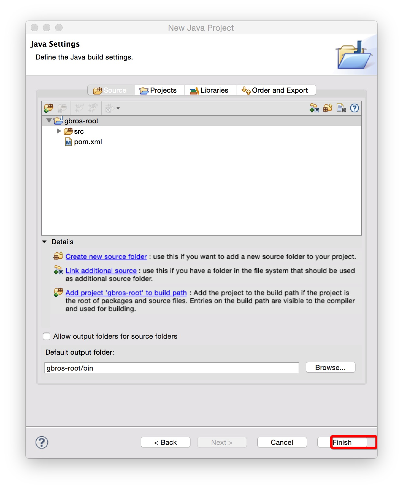
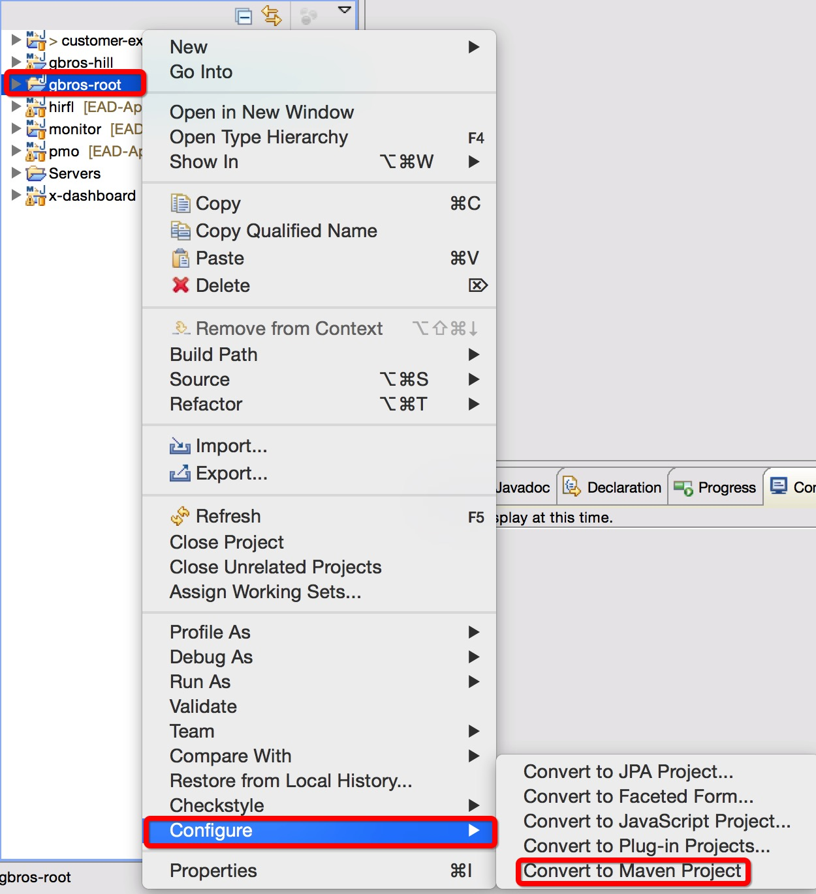
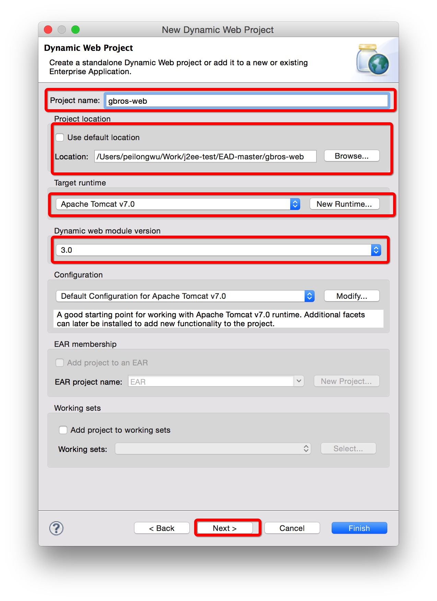
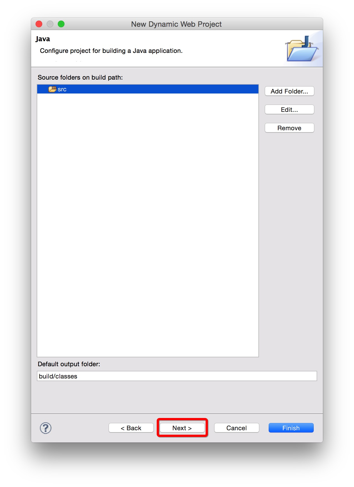
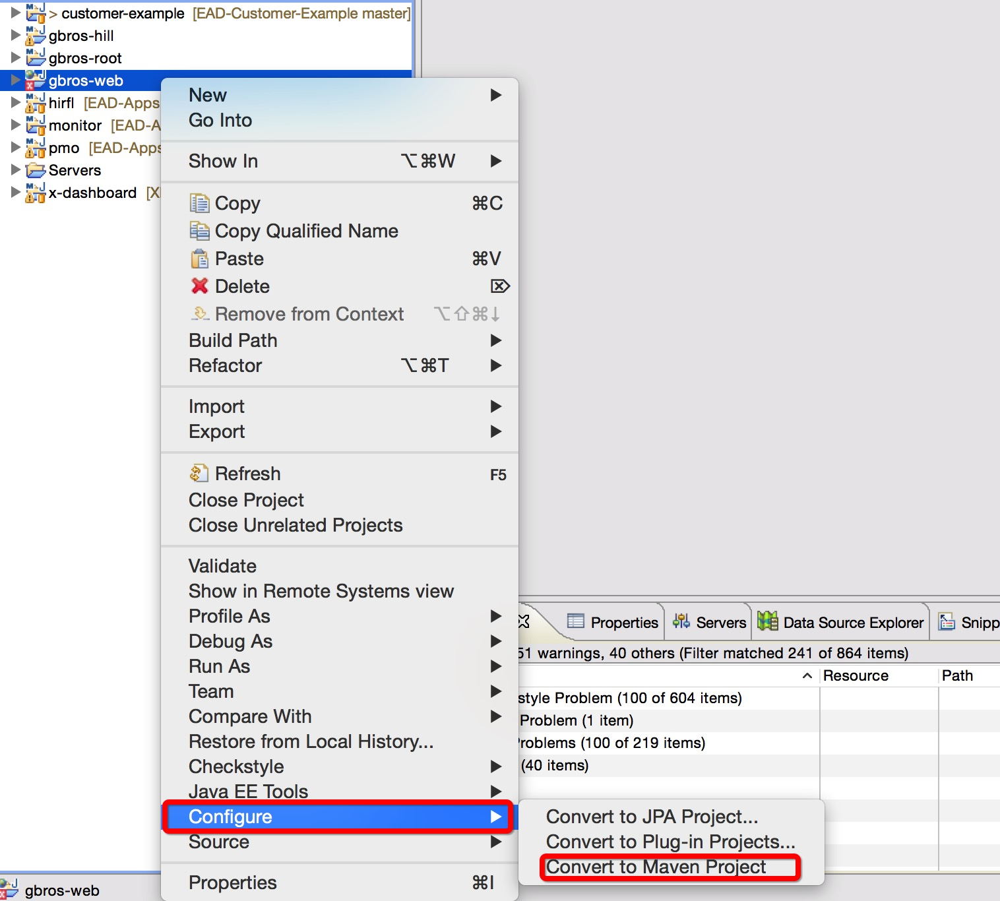
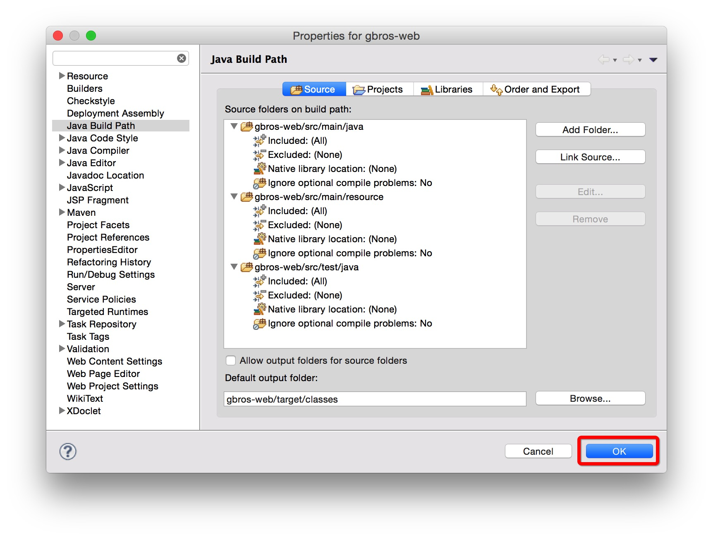

平台工程创建
首先建立 EAD 工程级目录，把 EAD 所包含的工程及工程文件都拷贝到该目录，项目包括：gbros-root，gbros-hill，gbros-web。
1. 创建 gbros-hill 项目
在配置安装好的 Eclipse 中建立 gbros-hill 项目，建立方法如下图：
第一步：新建 gbros-hill 项目
在空白处点击右键，选择 New > Java Project；

填写项目名称为：gbros-hill，并把路径选择到 EAD工程级目录下 gbros-hill 目录；

完成项目新建

第二步：把 gbros-hill 项目转换成 Maven 项目
在已建立好的项目上点击右键，选择 Configure > Convert to Maven Project;

2. 创建 gbros-root 项目
在配置安装好的 Eclipse 中建立 gbros-root 项目，建立方法如下图：
第一步：新建 gbros-root 项目
在空白处点击右键，选择 New > Java Project；

填写项目名称为：gbros-root，并把路径选择到 EAD工程级目录下 gbros-root 目录；

完成项目新建 
第二步：把 gbros-root 项目转换成 Maven 项目
在已建立好的项目上点击右键，选择 Configure > Convert to Maven Project;

3. 创建 gbros-web 项目
在配置安装好的 Eclipse 中建立 gbros-web 项目，建立方法如下图：
第一步：新建 gbros-web 项目
在空白处点击右键，选择 New > Other；

选择 Web > Dynamic Web Project,点击 Next；

填写项目名称为：gbros-web，并把路径选择到 EAD工程级目录下 gbros-web 目录； 
设置 Content Root 目录，完成项目新建
注意，Content Root 目录设置为 webapp 

第二步：把 gbros-web 项目转换成 Maven 项目
在已建立好的项目上点击右键，选择 Configure > Convert to Maven Project;

第三步：设置 gbros-web 项目的 Build Path；
在 gbros-web 项目上点击右键，选择：Build Path > Configure Build Path;

添加源码路径，进入 Build Path 后，选择 Add Forder,勾选以下目录；
- src > main > java
- src > main > resource
- src > test > java


删除 src目录；

完成 Build Path 设置； 